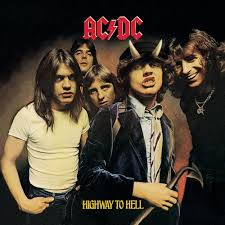
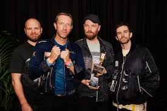
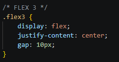
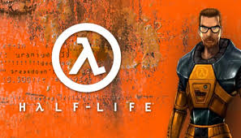
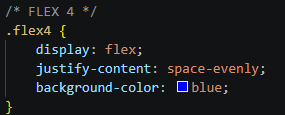

Cascada Cola de Caballo

Hermosa cascada ubicada en la Sierra Madre Oriental, famosa por su caída de agua en forma de cola de caballo. Es un lugar ideal para caminar, tomar fotos y disfrutar de la naturaleza cerca de Monterrey.
Cuando salgo de paseo con familia y vamos a un nuevo lugar me gusta ver alrededor para ver que cosas ahi de interesante.
Hermosa cascada ubicada en la Sierra Madre Oriental, famosa por su caída de agua en forma de cola de caballo. Es un lugar ideal para caminar, tomar fotos y disfrutar de la naturaleza cerca de Monterrey.

Museo interactivo que muestra la historia del desierto, con exhibiciones de fósiles, dinosaurios y ecosistemas del norte de México. Es perfecto para aprender sobre la naturaleza y la vida prehistórica de forma entretenida.

Histórico castillo ubicado en lo alto del Bosque de Chapultepec. Ofrece vistas increíbles de la ciudad y alberga el Museo Nacional de Historia, donde se pueden conocer importantes eventos del país.

Me gusta esuchar historias de personas o historia del mundo en si, pero tambien me gusta aprender sobre las historias de guerra que han pasado por los siglos.

Conflicto global ocurrido entre 1939 y 1945 que involucró a gran parte del mundo. Me interesa porque tiene muchas historias impactantes, batallas importantes y eventos que cambiaron el rumbo de la historia.

Conjunto de acontecimientos que formaron el país, desde las culturas prehispánicas hasta la actualidad. Me gusta porque permite entender las raíces, tradiciones y cambios importantes de México.

Relatos cortos y datos curiosos sobre diferentes culturas, países y momentos históricos. Son interesantes porque muestran hechos sorprendentes y permiten aprender cosas nuevas de forma rápida y entretenida.

Me gusta escuchar muchos tipos de musica, pero en especial el rock, pop y electro.

Me gusta su música por su energía y estilo rock clásico. Sus canciones son intensas, con guitarras fuertes y ritmos que motivan y hacen que sea fácil disfrutarlas.

Me gusta porque combinan música electrónica con sonidos únicos y creativos. Sus canciones son pegajosas, modernas y tienen un estilo muy diferente que las hace especiales.

Me gusta su música por ser más tranquila y emocional. Sus canciones tienen letras significativas y melodías que transmiten diferentes sentimientos.

Me gusta jugar porque me entretienen, ademas de ser algunos bastante divertidos, sus hoistorias, el mundo del juego, la sensacion que transmiten cuando logras tu objetivo, es increible.

Es uno de mis juegos favoritos por su mundo abierto y la libertad que ofrece para explorar. Me gusta poder descubrir lugares, resolver acertijos y vivir aventuras a mi propio ritmo.

Me gusta por su historia y la forma en que combina acción con narrativa. Es un juego que se siente inmersivo y que marcó una gran diferencia en los juegos de disparos.
Es de mis favoritos por su acción, su historia de ciencia ficción y sus batallas intensas. Además, tiene una jugabilidad divertida tanto en campaña como en multijugador.
